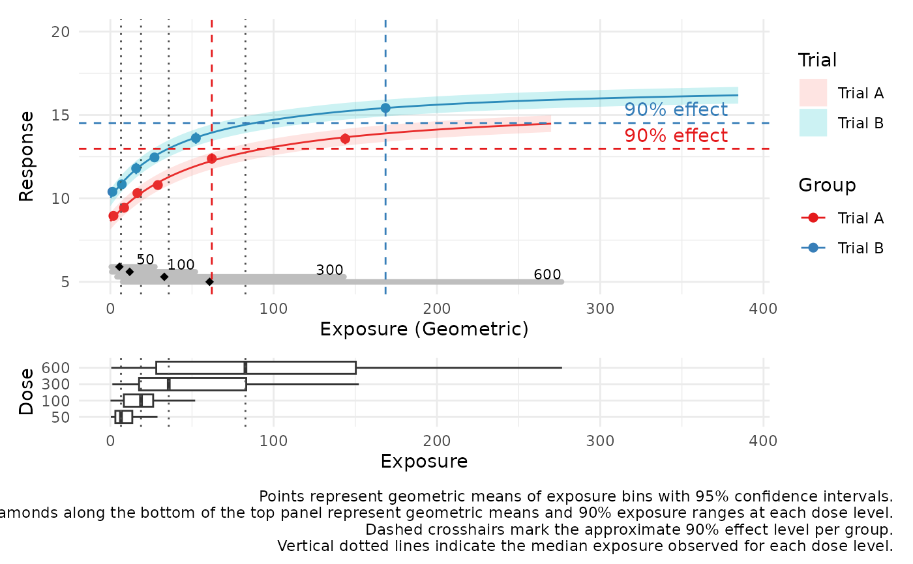

Creates a two-panel ggplot visualization showing the relationship between dose, exposure, and response.
plot_exposure_response(
data,
dose_var,
exposure_var,
response_var,
show_median_lines = TRUE,
show_points = FALSE,
effect_label_position = c("left", "right"),
show_effect_lines = "none",
external_df = NULL,
external_mapping = NULL,
xlims = NULL,
ylims = NULL,
vertical_line = NULL,
xlab = NULL,
ylab_top = NULL,
ylab_bottom = NULL,
log_scale = c("none", "logx", "logy", "logxy"),
n_bins = 6,
summary_type = c("geometric", "median", "mean"),
add_trend = TRUE,
trend_method = c("loess", "lm", "gam", "glm"),
trend_ci = TRUE,
trend_ci_level = 0.95,
group_var = NULL
)A data frame containing the dose, exposure, and response variables.
Unquoted name of the dose variable.
Unquoted name of the exposure variable.
Unquoted name of the response variable.
Character; "none", "eff50", "eff90", or "both" to indicate which effect threshold lines to show.
Optional data frame with predicted exposure-response values to overlay.
A list of column names in external_df: list(x = ..., y = ..., lower = ..., upper = ..., group = ...).
Optional vector of length 2 specifying x-axis limits.
Optional vector of length 2 specifying y-axis limits for the upper panel.
Optional numeric value where a vertical dashed line (e.g., EC50/EC90) will be drawn in both panels.
Optional custom label for the x-axis (shared).
Optional label for the y-axis of the top panel.
Optional label for the y-axis of the bottom panel.
Character string: "none", "logx", "logy", or "logxy" to apply log scaling.
Number of exposure bins for summary statistics.
Summary function for exposure: "geometric", "median", or "mean".
Logical; whether to overlay a trend line.
Method for trend line: "loess", "lm", "gam", or "glm".
Logical; whether to include a confidence interval ribbon around the trend.
Confidence level for the trend CI.
Optional unquoted grouping variable for color separation.
A ggplot object with two panels: response vs exposure, and exposure vs dose.
set.seed(123)
n_placebo_per_trial <- 30
n_active_per_trial <- 120
df_trialA <- data.frame(
Dose = c(rep(0, n_placebo_per_trial), rep(c(50, 100, 300, 600), each = n_active_per_trial / 4)),
Trial = "Trial A"
)
df_trialB <- data.frame(
Dose = c(rep(0, n_placebo_per_trial), rep(c(50, 100, 300, 600), each = n_active_per_trial / 4)),
Trial = "Trial B"
)
df_demo <- bind_rows(df_trialA, df_trialB)
n <- nrow(df_demo)
clearance <- ifelse(df_demo$Trial == "Trial A", 5, 6)
rate <- 1 / (df_demo$Dose / clearance)
rate[df_demo$Dose == 0] <- NA
exposure_vals <- rexp(n, rate = rate)
#> Warning: NAs produced
df_demo$Exposure <- ifelse(df_demo$Dose == 0, 0, exposure_vals)
effect_shift <- ifelse(df_demo$Trial == "Trial A", 0, 1.5)
df_demo$Response <- ifelse(df_demo$Dose == 0,
8 + effect_shift + rnorm(n, 0, 0.5),
8.5 + effect_shift + (7 * df_demo$Exposure / (50 + df_demo$Exposure)) + rnorm(n, 0, 0.5))
# Example external prediction data using fitted Emax model
library(minpack.lm)
# Fit Emax model by trial and generate predictions
external_pred <- df_demo %>%
filter(Dose > 0) %>%
group_by(Trial) %>%
group_modify(~{
df <- .x
fit <- try(nlsLM(Response ~ E0 + Emax * Exposure / (EC50 + Exposure),
data = df,
start = list(E0 = 7, Emax = 6, EC50 = 50)), silent = TRUE)
if (inherits(fit, "try-error")) return(NULL)
pred_grid <- data.frame(Exposure = seq(0, max(df$Exposure), length.out = 100))
preds <- predict(fit, newdata = pred_grid)
pred_grid$Response <- preds
pred_grid$Lower <- preds - 0.5
pred_grid$Upper <- preds + 0.5
pred_grid$Trial <- df$Trial[1]
pred_grid
}) %>%
ungroup()
#> Warning: Unknown or uninitialised column: `Trial`.
#> Warning: Unknown or uninitialised column: `Trial`.
plot_exposure_response(
df_demo, Dose, Exposure, Response,
n_bins = 6, ylims = c(5,20),
# vertical_line = 250,
summary_type = "geometric",
add_trend = FALSE,
# trend_method = "loess",
trend_ci = TRUE,
trend_ci_level = 0.95,
group_var = Trial,
external_df = external_pred,
external_mapping = list(x = "Exposure", y = "Response", lower = "Lower", upper = "Upper", group = "Trial"),
log_scale = "none", show_effect_lines = "eff90", effect_label_position = "right"
)
#>
#> Attaching package: ‘Hmisc’
#> The following objects are masked from ‘package:dplyr’:
#>
#> src, summarize
#> The following objects are masked from ‘package:base’:
#>
#> format.pval, units
